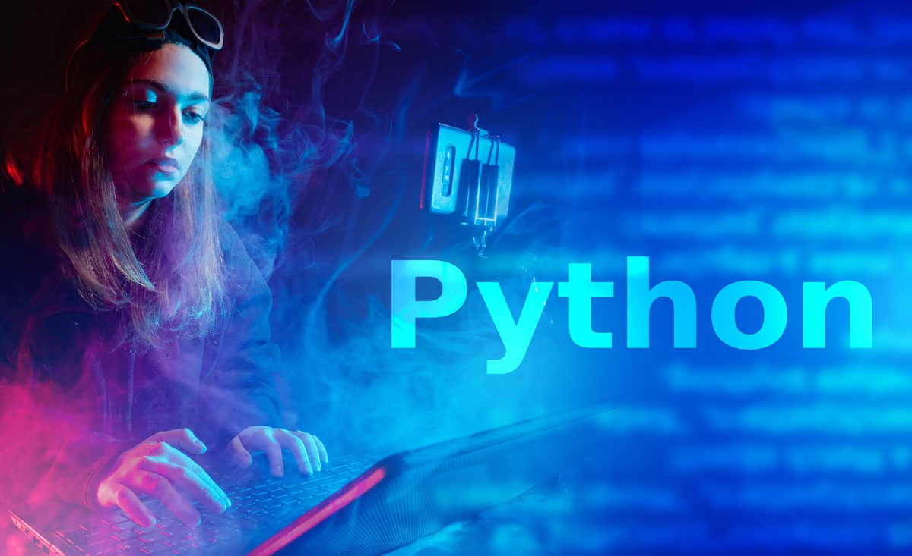

Python es un lenguaje de programación, creado en 1991, que ocupa un lugar importante en el desarrollo informático actual. Es el lenguaje de la Data Science, del Machine Learning y del Big Data
Este lenguaje de código abierto, multiplataforma y orientado a objetos es ampliamente utilizado por los informáticos en el desarrollo de software, la gestión de infraestructuras y el análisis de datos.
El lenguaje Python puede utilizarse para diferentes tipos de programación y desarrollo de software. También se utiliza para programar y automatizar tareas sencillas pero fastidiosas. Algunos ejemplos:
Programación de aplicaciones
Generación de códigos
Creación de servicios web
Meta programación
Ventajas y desventajas del lenguaje Python
Ventajas Python
Gratis (al igual que su código fuente y sus bibliotecas).
Fácil de aprender y de usar. Beneficia tanto a los principiantes como a los expertos.
Libre y de código abierto (open source)
Extensible e integrable con otros lenguajes
Desventajas Python
Este lenguaje no es adecuado para la programación de sistemas.
Es un lenguaje con una velocidad de ejecución lenta. No lo recomendamos para un producto/servicio en el que la velocidad sea un requisito importante.
Pueden surgir problemas de seguridad

¿Sabías que…?
El nombre de Python viene de Monty Python. Cuando Guido van Rossum estaba creando Python, también leía los guiones de Monty Python's Flying Circus de la BBC. Pensó que el nombre Python era apropiadamente corto y ligeramente misterioso.